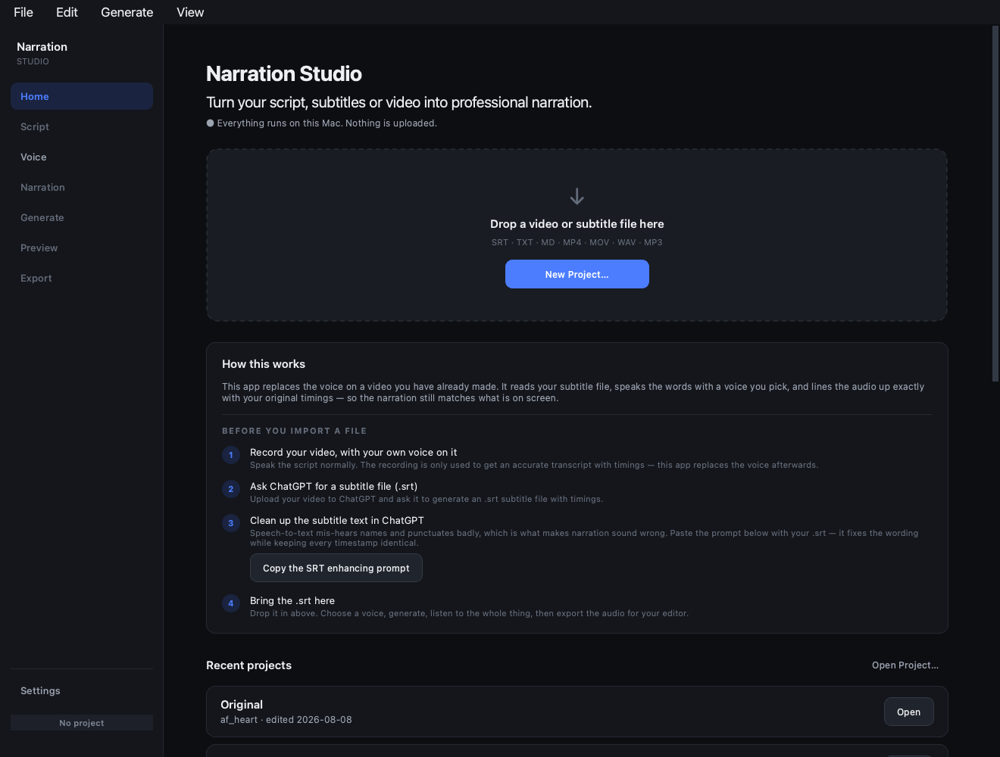
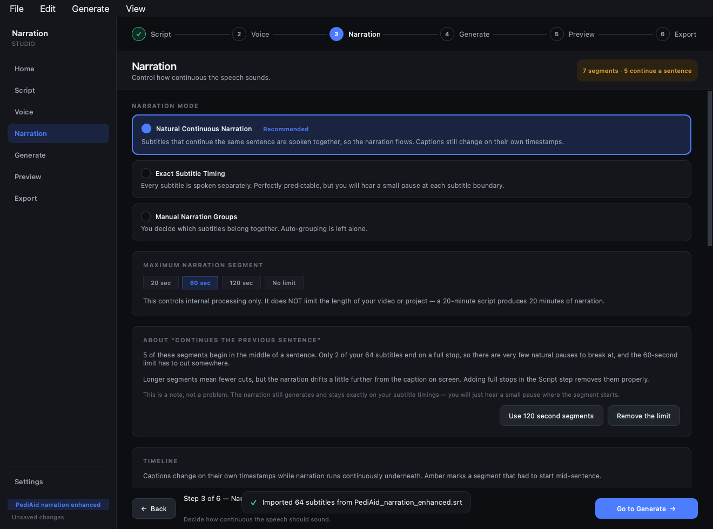
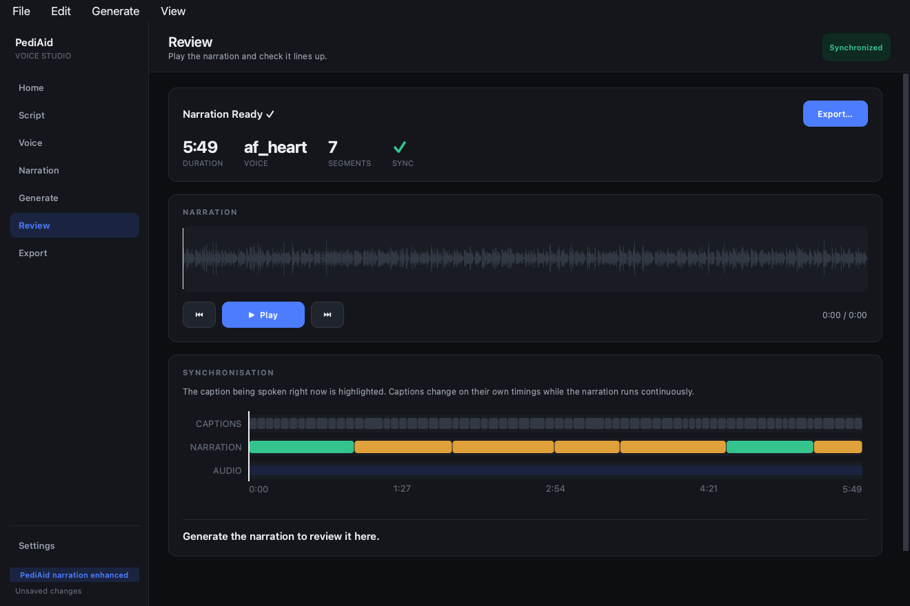

Your video already has the words in it. Narration Studio takes that text, reads it aloud in a voice you pick, and gives you audio that stays perfectly in step with what is on screen.
Version 0.1.0 · Also available as a portable zip, and the full source.

Text taken from a video arrives in short lines, each tied to a moment in the picture. One sentence usually runs across two or three of them. This is where most tools go wrong.
The voice stops dead in the middle of the sentence, then waits in silence until the next line is due. You get a robotic pause every few seconds, and long gaps wherever the speaking runs short.
Lines that belong to the same sentence are read together, in one breath. The words on screen still change exactly when they should — the voice simply does not stop with them.

Record the screen, let ChatGPT write the script, and let Narration Studio read it. The app hands you the prompt for the middle step.
A screen recording is fine, and it does not need any voice on it. Narration Studio supplies the voice — the video only has to exist.
Silent video? Upload it to ChatGPT and ask it to write a voice-over script with timings. It watches the video and tells you what to say and when.
Already narrated it yourself? Ask instead for the words that were spoken, with their timings.
.srt fileIn the same chat, ask for that script as an .srt with the timings. Paste in the prompt from the app at the same time and it will also tidy the wording so it reads naturally aloud.
Drop it in, pick a voice, press generate, listen to the whole thing, then save the audio for your video editor.

Every piece of speech is placed at its own moment on the clock, not after whatever came before. If one runs short, nothing else slides out of place.
Male and female — warm, bright, deep, calm. Hear any of them read a sample line before you decide.
All speech is generated locally. No account, no upload, no telemetry, no analytics. Works offline after setup.
Speech that runs long is sped up very slightly, keeping the voice's natural pitch. Speech that runs short is eased out to fill the space instead of leaving silence.
Teach it your product names and jargon once. A separate list fixes how things are pronounced without changing the words people read.
Everything is checked before it starts. If something goes wrong you get plain English and a suggested fix — never a spinner that quietly gives up.
A WAV or MP3 exactly as long as your video's words. Drop it straight onto the timeline in Premiere, Resolve, Kdenlive or iMovie.
Reword one line and only that part is made again. You are not waiting for the whole video every time.
| Requirement | Detail |
|---|---|
| Operating system | macOS 12 or newer · Windows 10 or 11 |
| Python | 3.12 or newer — python.org. On Windows tick “Add python.exe to PATH”. |
| FFmpeg | brew install ffmpeg on macOS · winget install Gyan.FFmpeg on Windows |
| Disk space | About 3 GB for the voice, downloaded once the first time you open it |
| What you feed it | Your video’s words with their timings — the file any captioning tool or ChatGPT gives you (.srt). Plain text works too. |
The download is tiny because the voice itself is fetched once, the first time you open the app, rather than packed inside it. You will see a window showing the progress. Every time you open it after that is instant.
Neither installer is code-signed, so macOS needs right-click ▸ Open the first time, and Windows SmartScreen needs More info ▸ Run anyway. Code signing requires paid developer certificates on both platforms.